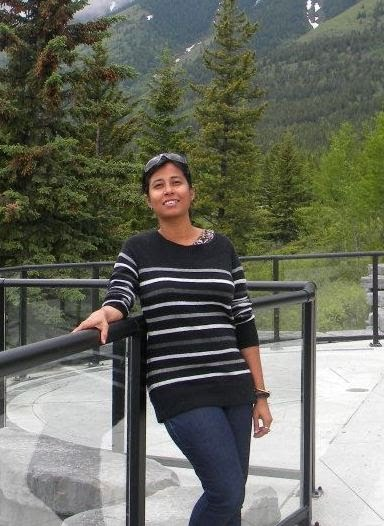

Please visit this page as often as you please as new opportunities may arise for some of you interested in this area. Moreover, this page will keep evolving with an increase in number of research personnel involved in this area and increase in research funding.
We have developed integral-formulation-based fast and accurate algorithms, called FFTRR-based algorithms, for solving inhomogeneous elliptic PDEs with forcing terms. These have been used to solve a variety of problems. Further research in this area is ongoing. You are welcome to inquire about these algorithms and get involved.
To know more about these Read more
People:

Prabir Daripa
|
External Collaborators (Past and Present)
Alumni
- 
|
Leonardo Borges
|
|
Aditi Ghosh
|
|
Prof. Daoud Suleiman Mashat
|
|
Prof. Ranjan Dash
|